Informe Forense "Caso Murciélago"
Análisis de Memoria, Disco y Triaje
Índice de contenidos
- Resumen ejecutivo
- Línea de tiempo
- MITRE ATT&CK
- TTPs observadas
- Descripción del incidente y alcance
- Dispositivos proporcionados y cadena de custodia
- Trabajos realizados
- Hallazgos principales
- IOCs
- Conclusiones
- Recomendaciones y plan de acción
Índice de figuras
- Figura 1. Verificación inicial de integridad de las evidencias EV-01 y EV-02.
- Figura 2. Perfil y hora de referencia de la imagen RAM.
- Figura 3. Extracción de hashes locales desde memoria.
- Figura 4. Resolución del hash NTLM recuperado.
- Figura 5. Procesos y líneas de comando observadas en RAM.
- Figura 6. Actividad de consola recuperada en memoria.
- Figura 7. Conectividad y puertos observados en memoria.
- Figura 8. Carpeta con documentación sensible y archivo indicativo.
- Figura 9. Descargas y herramientas preparatorias localizadas en el disco.
- Figura 10. Accesos recientes a documentos financieros.
- Figura 11. Evidencia de ejecución en Prefetch.
- Figura 12. Configuración de adquisición lógica con KAPE.
- Figura 13. Correlación entre Amcache y reputación externa del malware.
- Figura 14. Borrado de los documentos financieros desde la papelera.
- Figura 15. Revisión de persistencia simple en
NTUSER.DAT. - Figura 16. Revisión de persistencia simple en
SOFTWARE. - Figura 17. Historial WebCache con navegación externa y referencias locales del caso.
- Figura 18. Detalle de navegación recuperada con referencia a
mls-software.com/opensshd.html.
1. Resumen ejecutivo
1.1 Respuesta directa a las preguntas del enunciado
- Acceso a archivos confidenciales. Sí. Los documentos
CLIENTES DEL BANCO.xlsyPlan_de_cuentas.xls, ubicados enC:\Users\IEUser\Documents\Documentacion empresa, fueron abiertos el2021-03-23 23:07:55 UTCy el2021-03-23 23:08:31 UTC, respectivamente, y quedaron eliminados a continuación segúnRBCmdel2021-03-23 23:08:59 UTC. - Exfiltración y evidencia de ataque. Sí existen indicios. Se documentó la ejecución de
key.execomo binario compatible con keylogger, la presencia activa desshd.exeyhMailServer.exe, la ejecución deHASHMYFILES.EXE, y una conexión cerrada hacia la IP pública200.228.36.6. Todo ello es coherente con técnicas de captura de credenciales, acceso remoto, preparación del entorno y posible salida de información. - Dispositivos externos. Sí existen evidencias de conexión de almacenamiento USB. En
setupapi.dev.logquedó registrada una instalación iniciada por hardware paraUSB\VID_0951&PID_1666, identificada por el sistema comoDataTraveler 3.0y tratada con el driverUSB Mass Storage Device, con inicio de sección el2021-03-19 05:26:01 UTC. - Conexiones a la nube o a correos web externos. Sí existen trazas de conexión o intento de acceso, aunque no prueba completa de subida de archivos. Los artefactos de navegador reflejan una entrada de
Internet Explorerhaciahttps://login.yahoo.com/...done=https://mail.yahoo.com/con marcas del2021-03-19 08:24:58 UTCa2021-03-19 08:28:43 UTC, y en el perfil deEdgeaparecen huellas dedocs.google.com,drive.google.com,mail.google.comygmail.com. Estas trazas permiten afirmar actividad hacia correo web y servicios cloud, pero no por sí solas una exfiltración consumada mediante esos servicios. - Punto evaluable 1. La contraseña del usuario
IEUseresPassw0rd!, obtenida tras resolver el hash NTLMfc525c9683e8fe067095ba2ddc971889recuperado desde memoria. - Punto evaluable 2. Sí hubo ejecución de comandos para borrar rastro. En memoria se recuperaron
ipconfig,cd Desktopydel HashMyFiles.cfg; el fichero eliminado identificado de forma directa esHashMyFiles.cfg.
El análisis conjunto de la memoria RAM ram-001.raw y de la imagen de disco IE11-Win7-VMWare-disk1-002.vmdk permitió reconstruir un incidente con indicios consistentes de compromiso del sistema IEWIN7, uso de herramientas de acceso remoto y manipulación de documentación sensible almacenada en el perfil del usuario IEUser.
En la memoria se aislaron tres hallazgos especialmente relevantes. Por un lado, se recuperaron credenciales locales válidas a partir del volcado de hashes SAM, obteniéndose para IEUser el hash NTLM fc525c9683e8fe067095ba2ddc971889, cuya resolución en fuentes abiertas devolvió la contraseña Passw0rd!. Por otro, se localizó en ejecución el binario key.exe, compatible con una herramienta de captura de credenciales. A ello se sumó la presencia de procesos y servicios aptos para acceso remoto o salida de información, entre ellos sshd.exe y hMailServer.exe, además de una conexión cerrada hacia la IP pública 200.228.36.6.
La revisión del disco y el triaje posterior mostraron una secuencia no compatible con un uso ordinario del sistema. Desde el 2021-03-19 UTC quedaron rastros de instaladores y componentes asociados a hMailServer, Thunderbird, LibreOffice y OpenSSH. Los artefactos LNK, AutomaticDestinations, Prefetch, Amcache, MFT, Recycle Bin y distintos eventos del sistema permitieron relacionar esa preparación con el acceso a documentos financieros concretos, en especial Plan_de_cuentas.xls y CLIENTES DEL BANCO.xls, ambos ubicados en C:\Users\IEUser\Documents\Documentacion empresa y eliminados después de su apertura el 2021-03-23 UTC.
También quedaron indicios claros de actividad anti-forense. En memoria se recuperó el uso de consola para ejecutar ipconfig, desplazarse al escritorio y borrar HashMyFiles.cfg. Además, el análisis de Prefetch mostró la ejecución de HASHMYFILES.EXE desde el escritorio e incluyó la referencia directa a HASHMYFILES.CFG, lo que encaja con esa secuencia de consulta y eliminación. En el disco, la presencia de flag2.txt en la misma carpeta de la documentación sensible reforzó que el interés del conjunto analizado se centró en archivos con extensión .xls.
En conjunto, la evidencia apunta a una preparación previa del entorno, a la ejecución reiterada de un binario compatible con keylogger, al acceso a documentación sensible y al borrado posterior de ficheros para reducir la huella local. El informe separa las fases de memoria, disco y triaje para facilitar la lectura, aunque las tres responden a una misma secuencia técnica.
2. Línea de tiempo
Nota metodológica: en este informe todas las marcas temporales se expresan en UTC. Cuando una salida no aportaba una referencia temporal suficiente por sí sola, sólo se integró en la cronología después de comprobar su coherencia con artefactos de memoria y ejecución que sí correlacionaban en UTC, como KEY.EXE entre pslist y Prefetch, o hMailServer.exe entre memoria, Prefetch y System.evtx.
| Fecha y hora (UTC) | Fuente | Evento observado | Relevancia |
|---|---|---|---|
| 2021-03-19 09:13:08 UTC | System.evtx |
Instalación del servicio hMailServer con inicio automático. |
Señala preparación previa del entorno para comunicación o posible salida de datos. |
| 2021-03-19 10:18:14 UTC | LECmd / AutomaticDestinations |
Aparición de Plan_de_cuentas.xls en C:\Users\IEUser\Documents\Documentacion empresa. |
Ubica uno de los documentos sensibles trabajados durante el incidente. |
| 2021-03-19 10:19:04 UTC | LECmd / AutomaticDestinations |
Aparición de CLIENTES DEL BANCO.xls en la misma carpeta. |
Confirma un segundo documento financiero sensible dentro del mismo conjunto documental. |
| 2021-03-19 10:38:37 UTC | Amcache ShortCuts |
Creación de accesos directos asociados a hMailServer. |
Refuerza que la herramienta quedó instalada y operativa desde esa fecha. |
| 2021-03-20 11:32:49 UTC | Amcache UnassociatedFileEntries |
Registro de C:\Users\IEUser\Desktop\key.exe. |
Primer rastro sólido del malware en el host. |
| 2021-03-23 17:28:39 UTC - 17:29:58 UTC | Prefetch |
Ejecución de HASHMYFILES.EXE desde el escritorio, con referencia a HASHMYFILES.CFG. |
Encaja con la posterior eliminación manual del fichero de configuración. |
| 2021-03-23 19:08:10 UTC | Prefetch |
Octava ejecución registrada de KEY.EXE. |
Demuestra actividad reiterada del binario malicioso. |
| 2021-03-23 19:24:35 UTC | Volatility imageinfo |
Hora de referencia de la captura de memoria RAM. | Fija el estado del host durante la fase activa del incidente. |
| 2021-03-23 19:24:35 UTC aprox. | Volatility consoles |
Actividad de consola residente en memoria con ipconfig, cd Desktop y del HashMyFiles.cfg. |
Muestra reconocimiento básico de red y borrado selectivo de rastro. |
| 2021-03-23 22:48:34 UTC - 22:49:18 UTC | Prefetch / System.evtx |
Nueva actividad de hMailServer. |
Indica que el servicio siguió operativo en la misma jornada del incidente. |
| 2021-03-23 23:07:55 UTC | LECmd / AutomaticDestinations |
Apertura reciente de CLIENTES DEL BANCO.xls. |
Prueba de acceso al contenido antes del borrado. |
| 2021-03-23 23:08:31 UTC | LECmd / AutomaticDestinations |
Apertura reciente de Plan_de_cuentas.xls. |
Sitúa el acceso al otro documento crítico inmediatamente antes de su eliminación. |
| 2021-03-23 23:08:59 UTC | RBCmd |
Eliminación de CLIENTES DEL BANCO.xls y Plan_de_cuentas.xls en la papelera del usuario. |
Evidencia directa de borrado posterior al acceso. |
3. MITRE ATT&CK
| Táctica | Técnica | Nombre | Evidencia observada |
|---|---|---|---|
| Discovery | T1016 | System Network Configuration Discovery | En memoria se recuperó el comando ipconfig desde consola. |
| Command and Control / Ingress | T1105 | Ingress Tool Transfer | La revisión de MFT y artefactos asociados mostró binarios descargados con rastro de origen externo y presencia de instaladores en Downloads. |
| Credential Access | T1056.001 | Keylogging | key.exe fue identificado como binario sospechoso, con ejecución repetida y clasificación de tipo keylogger en VirusTotal. |
| Collection | T1005 | Data from Local System | Los artefactos LNK y AutomaticDestinations evidenciaron acceso a Plan_de_cuentas.xls y CLIENTES DEL BANCO.xls. |
| Lateral Movement / Remote Services | T1021.004 | SSH | Se observó sshd.exe en memoria, regla de firewall asociada y puerto 22 abierto. |
| Defense Evasion | T1070.004 | File Deletion | Se documentó el borrado de HashMyFiles.cfg y la eliminación de los documentos .xls del caso. |
4. TTPs observadas
La secuencia técnica recuperada permite distinguir cuatro momentos bien diferenciados.
Preparación del entorno. El 2021-03-19 UTC quedaron instalados o disponibles componentes que no forman parte del uso habitual de un puesto de trabajo orientado a ofimática básica: hMailServer, Thunderbird, LibreOffice y OpenSSH. Esta combinación indica una preparación previa del sistema para tratamiento documental, acceso remoto y posibles comunicaciones salientes.
Ejecución de malware orientado a captura. El binario key.exe aparece en escritorio, queda registrado en Amcache, dispone de Prefetch propio y acumuló ocho ejecuciones. La evidencia externa aportada mediante VirusTotal lo clasifica como artefacto malicioso con funcionalidad de keylogging/troyano. No se observó persistencia simple mediante claves Run, por lo que el mecanismo exacto de arranque no quedó totalmente resuelto con el material revisado.
Acceso y tratamiento de información sensible. Los documentos financieros de la carpeta Documentacion empresa fueron abiertos en fechas muy concretas y después eliminados. flag2.txt, localizado en la misma ruta, contiene un mensaje explícito indicando que los archivos filtrados eran .xls, lo que encaja con los dos documentos recuperados por nombre y con la actividad reciente de LibreOffice Calc.
Borrado selectivo y reducción de huella. El incidente incluyó acciones coherentes con anti-forense: eliminación de HashMyFiles.cfg, borrado de los dos .xls y desaparición de binarios o ficheros asociados a la actividad. La secuencia no elimina el rastro pericial, pero sí demuestra intención de dificultar la reconstrucción posterior.
En cuanto a exfiltración, la evidencia permite afirmar que el sistema contaba con OpenSSH activo, hMailServer operativo y al menos una conexión cerrada hacia 200.228.36.6. Eso sostiene un escenario técnicamente viable de salida de información, aunque con la evidencia disponible no se recuperó el destinatario final exacto ni el contenido transmitido por correo.
En relación con otras preguntas del enunciado, el análisis de setupapi.dev.log permitió acreditar la conexión de un dispositivo de almacenamiento masivo USB identificado como USB\VID_0951&PID_1666 (DataTraveler 3.0) el 2021-03-19 05:26:01 UTC. Además, los artefactos de navegador mostraron accesos o intentos de acceso a mail.yahoo.com, docs.google.com, drive.google.com, mail.google.com y gmail.com. Estas últimas evidencias son compatibles con uso de correo web y servicios cloud, aunque no permiten atribuir por sí solas una transferencia efectiva de los documentos sustraídos por ese canal.
5. Descripción del incidente y alcance
Se investigó un sistema Windows 7 asociado al usuario IEUser, identificado como IEWIN7, con el objetivo de reconstruir un posible escenario de fuga de información. El trabajo se organizó en dos grandes bloques conectados entre sí: primero, el análisis de la memoria RAM para fijar el estado vivo del equipo; después, el examen de la imagen de disco, completado con triaje y con parsers de Eric Zimmerman para ordenar y correlacionar los artefactos recuperados.
El escenario reconstruido muestra una actuación planificada. Días antes del momento crítico quedaron instaladas o disponibles varias herramientas de soporte para abrir documentos, mantener acceso remoto y preparar posibles canales de comunicación. Más adelante apareció implantado key.exe, que fue ejecutado en repetidas ocasiones. Ya en la fase activa del incidente se localizaron credenciales válidas del usuario local, actividad de consola con borrado de rastro, servicios de red operativos y acceso a documentos financieros concretos.
El análisis de memoria aportó la fotografía del sistema en funcionamiento: procesos, cuentas, consola, servicios y conectividad. El análisis de disco y el triaje añadieron la perspectiva histórica: cuándo se preparó el entorno, qué documentos se abrieron, qué se intentó borrar y qué artefactos quedaron como rastro. Aunque la práctica planteaba frentes distintos, ambos terminaron convergiendo en una misma narrativa técnica y por eso se integran en un único informe.
Alcance del análisis. Este trabajo se circunscribe a las dos evidencias originales facilitadas, ram-001.raw y IE11-Win7-VMWare-disk1-002.vmdk, así como a los artefactos derivados obtenidos a partir de ellas durante la práctica. No se dispuso de capturas completas de tráfico, telemetría EDR, registros de proxy, exportaciones de buzones ni evidencia directa del extremo remoto 200.228.36.6. Por ello, el análisis acredita con solidez la preparación del entorno, la ejecución del malware, el acceso a los documentos y el borrado posterior, pero no permite atribuir con certeza absoluta el mecanismo final de exfiltración ni el destinatario último de los datos.
6. Dispositivos proporcionados y cadena de custodia
6.1 Evidencias originales analizadas
| ID de evidencia | Descripción | Identificador / hash | Observaciones |
|---|---|---|---|
| EV-01 | Volcado de memoria ram-001.raw |
SHA-256 A0AD93B20CD9294F9D49947E87675C12159E3D96AE0D3C5A547F232630B0B240 |
Evidencia utilizada para el análisis de estado en vivo mediante Volatility. |
| EV-02 | Imagen de disco IE11-Win7-VMWare-disk1-002.vmdk |
SHA-256 60919A3ADC8450FA7E720EE68F6815D2179673C21C1844F198D7E45B38497068 |
Evidencia utilizada para análisis lógico con FTK Imager, montaje y triage con KAPE. |
6.2 Criterio temporal, trazabilidad y preservación
El análisis se documentó mediante capturas de pantalla, exportaciones de FTK Imager, colecciones Targets de KAPE, salidas parseadas en Modules, CSV de apoyo, ficheros de log y otros productos derivados preservados dentro de Tarea 10\Evidencias. A efectos de cadena de custodia, todas las horas del presente apartado se expresan en UTC. La fijación temporal se apoyó en marcas preservadas de los propios ficheros del expediente y en la correlación cruzada entre artefactos de memoria, disco y triage.
La coherencia de esta fijación se contrastó de forma cruzada con referencias preservadas del expediente, entre ellas volatility-imageinfo.png (2026-04-27 17:00:57 UTC), kape_triage.png (2026-04-30 22:19:35 UTC) y kape_triage_lecmd_output.png (2026-05-02 10:05:54 UTC). Cuando una captura no muestra el reloj, se empleó la marca temporal del archivo preservado correspondiente en Evidencias, ya fuera PNG, CSV, TXT o artefacto extraído, por resultar coherente con esas referencias y con la secuencia general de trabajo.
La primera actuación que se hace constar formalmente en esta cadena de custodia es la fijación hash de las dos evidencias originales, documentada el 2026-04-27 01:10:00 UTC. A partir de ese momento, el trabajo posterior se realizó sobre copias de trabajo, salidas de herramientas y artefactos derivados generados en carpetas controladas del caso. Esos productos derivados no sustituyen la evidencia de origen, sino que materializan su examen técnico y dejan constancia reproducible de cada actuación pericial.
Referencia visual: vease la Figura 1 en el Anexo de figuras.
La secuencia fechada aplicada fue la siguiente:
2026-04-27 01:10:00 UTC: verificación de integridad mediante SHA-256 deram-001.rawy de la imagenvmdk.2026-04-27 15:56:43 UTCa2026-04-27 17:00:57 UTC: explotación analítica deEV-01conVolatility 2.6, documentando procesos, líneas de comando, consola, hashes locales, conectividad y perfil de memoria.2026-04-29 19:07:58 UTCa2026-04-29 20:18:01 UTC: revisión controlada deEV-02conFTK Imager, incluyendo rutas de usuario,Downloads,.ssh,Recent,DocumentsyDocumentacion empresa.2026-04-30 22:19:35 UTC: montaje lógico de la imagenvmdkcon Arsenal Image Mounter y preparación de la extracción conKAPE.2026-05-02 09:49:58 UTCa2026-05-02 11:34:30 UTC: revisión de productos derivados estructurados conMFTECmd,PECmd,LECmd,RBCmd,WinLogOnView,Windows Registry Recovery,BrowsingHistoryViewyAmcache.2026-05-05 21:46:55 UTCa2026-05-05 21:47:35 UTC: recuperación final de historial relevante desdeWebCacheV01.daty preservación de capturas complementarias.
6.3 Actuaciones formales de cadena de custodia
La siguiente tabla se presenta en orden metodológico de custodia. Por ello, la fijación hash de EV-01 y EV-02 figura en primer lugar como acto formal de aseguramiento y precede a cualquier explotación analítica posterior del caso.
| Fecha y hora (UTC) | Actuación formal de custodia | Evidencia o fuente afectada | Producto derivado o soporte preservado |
|---|---|---|---|
| 2026-04-27 01:10:00 | Cálculo y preservación de los hashes SHA-256 de las evidencias originales EV-01 y EV-02, fijando su identificación inicial antes del inicio del trabajo analítico. |
EV-01 / EV-02 | ram_image_hashes.png |
| 2026-04-27 15:56:43 a 2026-04-27 17:00:57 | Explotación analítica de EV-01 con Volatility 2.6, documentando pslist, cmdline, consoles, hashdump, netscan e imageinfo como base técnica del análisis de memoria. |
EV-01 | volatility-pslist.png, volatility-cmdline.png, volatility-cmdline-2.png, volatility-consoles.png, volatility-consoles-2.png, volatility-hashdump.png, volatility-netscan.png, volatility-netscan-2.png, volatility-imageinfo.png |
| 2026-04-29 19:07:58 | Apertura controlada de EV-02 en FTK Imager y comienzo de la revisión manual de rutas relevantes del sistema y del perfil de usuario. |
EV-02 | Repositorio FTK Imager\ con $MFT, config\, Prefetch\, Recicle Bin\, Roaming_Microsoft_Windows_Recent\, webCache\, LECmd - output.txt, mft_borrados_resumen.csv y soporte visual ftk_imager_public_downloads.png |
| 2026-04-29 19:15:09 | Continuación de la revisión manual de EV-02, documentando .ssh, Downloads, Documentacion empresa, Recent, Documents y el perfil de usuario exportado. |
EV-02 | FTK Imager\IEUser\NTUSER.DAT, FTK Imager\webCache\WebCacheV01.dat y soportes ftk_imager_ieuser_ssh.png, ftk_imager_ieuser_downloads.png, ftk_imager_ieuser_documentacion_documentacion_empresa.png, ftk_imager_ieuser_microsoft_windows_recent.png, ftk_imager_ieuser_documentacion.png |
| 2026-04-30 22:19:35 | Montaje lógico de la imagen vmdk con Arsenal Image Mounter y preparación de la extracción estructurada con KAPE. |
EV-02 | Repositorio Triage_Kape\Targets\, repositorio Triage_Kape\Modules\, 2026-04-30T21_31_09_5712827_ConsoleLog.txt y soporte visual kape_triage.png |
| 2026-05-02 09:49:58 | Revisión de productos derivados generados a partir de EV-02 mediante MFTECmd, PECmd, LECmd, RBCmd, WinLogOnView, WRR, BrowsingHistoryView y contraste de Amcache. |
Derivados de EV-02 | Triage_Kape\Modules\ProgramExecution\20260430221711_PECmd_Output.csv, Triage_Kape\Modules\EventLogs\20260430221700_EvtxECmd_Output.csv, Triage_Kape\Modules\Registry\DFIRBatch_RECmdConsoleLog.txt, Triage_Kape\20260502132241_Amcache_*.csv, Triage_Kape\20260502132416_Amcache_*.csv, más soportes kape_triage_mftecmd_output.png, kape_triage_pecmd_output.png, kape_triage_lecmd_output.png, kape_triage_rbcmd_output.png, kape_triage_mftecmd_output_2.png, winlog_on_view.png, browsing_history_view_config.png, browsing_history_view_no_result.png, wrr_ntuserdat.png, wrr_software.png, amcache_parser_virus_total_key.exe_malware_family.png, amcache_parser_virus_total_key.exe_malware_family_2.png |
| 2026-05-05 21:46:55 | Recuperación final de historial relevante desde WebCacheV01.dat y preservación de capturas complementarias del resultado. |
Derivados de EV-02 | FTK Imager\webCache\WebCacheV01.dat, FTK Imager\webCache\V01.log, FTK Imager\webCache\V01.chk y soportes browsing_history_view_web_cache.png, browsing_history_view_web_cache_2.png |
Este registro resume la secuencia formal de aseguramiento y explotación de las evidencias originales. En él, el primer acto consignado es la fijación hash de EV-01 y EV-02, pero también se integra expresamente el bloque de análisis de memoria RAM con sus fechas y horas UTC dentro de la propia cadena de custodia.
6.4 Registro fechado de productos de trabajo preservados
| Fecha y hora (UTC) | Actuación documentada | Evidencia o fuente afectada | Producto derivado o soporte preservado |
|---|---|---|---|
| 2026-04-27 15:56:43 | Documentación inicial del listado de procesos activos en memoria. | EV-01 | volatility-pslist.png |
| 2026-04-27 16:01:47 | Primera captura de cmdline para fijar procesos y parámetros relevantes en RAM. |
EV-01 | volatility-cmdline.png |
| 2026-04-27 16:02:55 | Captura complementaria de cmdline, con foco en key.exe, sshd.exe y hMailServer.exe. |
EV-01 | volatility-cmdline-2.png |
| 2026-04-27 16:04:21 | Preservación de la salida consoles con los comandos ipconfig, cd Desktop y del HashMyFiles.cfg. |
EV-01 | volatility-consoles.png |
| 2026-04-27 16:05:34 | Captura complementaria de consoles para completar el contexto de actividad manual en RAM. |
EV-01 | volatility-consoles-2.png |
| 2026-04-27 16:08:41 | Extracción y documentación de hashes locales mediante hashdump. |
EV-01 | volatility-hashdump.png |
| 2026-04-27 16:17:53 | Contraste externo del hash NTLM recuperado para verificar su resolución textual. | Derivado de EV-01 | hashes.com-password.png |
| 2026-04-27 16:48:25 | Segunda comprobación externa del mismo hash NTLM en una fuente independiente. | Derivado de EV-01 | crackstation.net-password.png |
| 2026-04-27 16:56:59 | Preservación inicial de la salida netscan para fijar puertos, procesos de red y conexión externa. |
EV-01 | volatility-netscan.png |
| 2026-04-27 16:57:32 | Captura complementaria de netscan para completar las filas de conectividad observadas. |
EV-01 | volatility-netscan-2.png |
| 2026-04-27 17:00:57 | Documentación del perfil sugerido y de la hora de referencia de la memoria mediante imageinfo. |
EV-01 | volatility-imageinfo.png |
| 2026-04-29 18:37:36 | Revisión en FTK Imager de rutas vinculadas a sshd-server y elementos asociados a papelera. |
EV-02 | ftk_imager_sshd_server_recycle.png |
| 2026-04-29 18:51:05 | Revisión en FTK Imager de rutas relacionadas con sshd-server y accesos de usuario. |
EV-02 | ftk_imager_sshd_server_send_to.png |
| 2026-05-02 09:49:58 | Revisión de la salida de MFTECmd para documentar huellas del sistema de archivos. |
Derivado de EV-02 | kape_triage_mftecmd_output.png |
| 2026-05-02 09:51:36 | Revisión de la salida de PECmd para confirmar ejecuciones históricas en Prefetch. |
Derivado de EV-02 | kape_triage_pecmd_output.png |
| 2026-05-02 10:05:54 | Revisión de la salida de LECmd y AutomaticDestinations para documentar accesos a documentos. |
Derivado de EV-02 | kape_triage_lecmd_output.png |
| 2026-05-02 10:14:38 | Revisión de la salida de RBCmd para documentar la eliminación de los .xls. |
Derivado de EV-02 | kape_triage_rbcmd_output.png |
| 2026-05-02 10:37:18 | Segunda revisión de MFTECmd para completar la correlación del sistema de archivos. |
Derivado de EV-02 | kape_triage_mftecmd_output_2.png |
| 2026-05-02 10:51:31 | Consulta de eventos de sesión y actividad de cuentas mediante WinLogOnView. |
Derivado de EV-02 | winlog_on_view.png |
| 2026-05-02 11:00:32 | Configuración de BrowsingHistoryView para el examen de WebCacheV01.dat. |
Derivado de EV-02 | browsing_history_view_config.png |
| 2026-05-02 11:02:48 | Primer intento de recuperación de historial web, documentado sin resultados utilizables. | Derivado de EV-02 | browsing_history_view_no_result.png |
| 2026-05-02 11:18:24 | Revisión de la colmena NTUSER.DAT con Windows Registry Recovery. |
Derivado de EV-02 | wrr_ntuserdat.png |
| 2026-05-02 11:18:56 | Revisión de la colmena SOFTWARE con Windows Registry Recovery. |
Derivado de EV-02 | wrr_software.png |
| 2026-05-02 11:30:05 | Contraste de Amcache con reputación externa del binario key.exe. |
Derivado de EV-02 | amcache_parser_virus_total_key.exe_malware_family.png |
| 2026-05-02 11:34:30 | Captura complementaria del contraste Amcache / reputación externa para preservar el contexto completo. |
Derivado de EV-02 | amcache_parser_virus_total_key.exe_malware_family_2.png |
| 2026-05-05 21:46:55 | Recuperación efectiva de historial relevante desde WebCacheV01.dat mediante BrowsingHistoryView. |
Derivado de EV-02 | browsing_history_view_web_cache.png |
| 2026-05-05 21:47:35 | Captura complementaria del historial web recuperado, incluyendo referencia a mls-software.com/opensshd.html. |
Derivado de EV-02 | browsing_history_view_web_cache_2.png |
Este segundo registro incorpora, también con fecha y hora UTC explícitas, cada salida analítica, captura o artefacto preservado en el expediente técnico. Así se evita que la datación quede sólo sugerida por una imagen y se integra expresamente en el cuerpo del informe la existencia de colecciones extraídas, CSV parseados, hives de registro, logs y repositorios completos de trabajo.
6.5 Repositorios y artefactos derivados preservados
| Repositorio o conjunto preservado | Contenido conservado | Función dentro de la cadena de custodia |
|---|---|---|
Evidencias\FTK Imager\ |
Exportaciones manuales del examen lógico: $MFT, config\, IEUser\NTUSER.DAT, Prefetch\, Recicle Bin\, Roaming_Microsoft_Windows_Recent\, webCache\, LECmd - output.txt, mft_borrados_resumen.csv. |
Preserva el subconjunto de artefactos de disco seleccionados durante la revisión manual con FTK Imager. |
Evidencias\Triage_Kape\Targets\ |
Colección bruta de artefactos extraídos por KAPE: ficheros .pf, .lnk, .automaticDestinations-ms, .customDestinations-ms, colmenas SAM, SECURITY, SOFTWARE, SYSTEM, NTUSER.DAT, eventos .evtx, trazas .etl, WebCacheV01.dat, tareas programadas y repositorio WMI. |
Conserva la extracción estructurada de artefactos originales derivados de EV-02 sobre la que se apoyó el parseo posterior. |
Evidencias\Triage_Kape\Modules\ y CSV Amcache_* |
Resultados parseados por familia: ProgramExecution, EventLogs, Registry, FileDeletion, FileFolderAccess, FileSystem, SRUMDatabase, SUMDatabase, SQLDatabases, además de CSV de Amcache y ConsoleLog.txt. |
Preserva los resultados de análisis ya normalizados y reutilizables para correlación cronológica y búsqueda selectiva. |
Capturas y soportes visuales *.png |
Evidencia visual de salidas relevantes de Volatility, FTK Imager, KAPE, WRR, BrowsingHistoryView y contraste externo de hashes y reputación. | Sirve como apoyo visual del expediente, pero no agota por sí sola el conjunto de productos derivados preservados. |
6.6 Artefactos analizados dentro del alcance
| Fuente | Artefactos principales | Finalidad dentro del análisis |
|---|---|---|
| Memoria RAM | imageinfo, pslist, cmdline, consoles, hashdump, netscan |
Estado en vivo del sistema, procesos, consola, credenciales y conectividad. |
| Imagen de disco | Prefetch, Recent, .ssh, Downloads, Documents, $Recycle.Bin, $MFT |
Ejecución histórica, acceso a documentos, preparación del entorno, borrado y persistencia potencial. |
| Triaje | LECmd, PECmd, RBCmd, AmcacheParser, WRR, WinLogOnView, EvtxECmd |
Correlación temporal, reputación de binarios, eventos y evidencias estructuradas. |
Esta cadena de custodia se apoya en tres principios: identificación inequívoca de cada evidencia mediante hash, separación entre evidencia original y productos derivados de análisis, y trazabilidad temporal de las herramientas empleadas en cada fase. En consecuencia, las capturas incorporadas al informe no actúan como prueba aislada, sino como un subconjunto visual de un expediente más amplio que también conserva exportaciones de FTK Imager, colecciones Targets de KAPE, salidas Modules, CSV parseados, hives de registro, eventos y artefactos de sistema fechados dentro del caso.
Debe quedar expresamente aclarado que herramientas como Magnet RAM Capture, DumpIt o elementos del maletín forense del analista pertenecen a la fase de adquisición de evidencia. Por tanto, cuando aparecen en disco, en memoria o en artefactos de ejecución, no deben atribuirse por defecto al atacante. En este caso se consideraron parte de la operativa forense y no de la cadena de acciones maliciosas.
7. Trabajos realizados
7.1 Bloque 1: análisis de memoria RAM
Sobre EV-01 se ejecutaron los plugins imageinfo, pslist, cmdline, consoles, hashdump y netscan de Volatility 2.6. El objetivo fue fijar el perfil correcto de la imagen, identificar procesos activos, recuperar línea de comandos, extraer actividad de consola, analizar conexiones de red y obtener credenciales locales.
Referencia visual: vease la Figura 2 en el Anexo de figuras.
El perfil sugerido y empleado fue Win7SP1x64, compatible con el sistema observado. La extracción de hashes SAM devolvió varias cuentas locales, entre ellas IEUser y Administrator, con el mismo hash NTLM fc525c9683e8fe067095ba2ddc971889. La resolución de dicho hash en fuentes abiertas permitió obtener la contraseña Passw0rd!.
Referencia visual: vease la Figura 3 en el Anexo de figuras.
Referencia visual: vease la Figura 4 en el Anexo de figuras.
En pslist y cmdline aparecieron, entre otros, key.exe, sshd.exe, hMailServer.exe, cygrunsrv.exe y cmd.exe. Esa combinación fue relevante porque unió un binario sospechoso de captura de credenciales con un servicio SSH y con un servidor de correo local operando en el mismo host. netscan reforzó el hallazgo al mostrar el puerto 22 abierto por sshd.exe, los puertos 25, 110, 143 y 587 vinculados a hMailServer.exe, y una conexión cerrada hacia la IP pública 200.228.36.6.
Referencia visual: vease la Figura 5 en el Anexo de figuras.
El plugin consoles resultó determinante para documentar la actividad manual en consola. En él se recuperaron los comandos ipconfig, cd Desktop y del HashMyFiles.cfg. El primero situó la IP local 192.168.65.135; los otros dos evidenciaron acceso directo al escritorio del usuario y eliminación selectiva del fichero de configuración de HashMyFiles.
Referencia visual: vease la Figura 6 en el Anexo de figuras.
Referencia visual: vease la Figura 7 en el Anexo de figuras.
7.2 Bloque 2: análisis de la imagen de disco con FTK Imager
Sobre EV-02 se revisaron manualmente rutas relevantes del perfil de IEUser, en especial Desktop, Documents, Downloads, AppData\Roaming\Microsoft\Windows\Recent, .ssh y Windows\Prefetch. Este bloque permitió dar contexto histórico y material a lo que en RAM sólo aparecía como fotografía instantánea.
En Documents\Documentacion empresa se encontró flag2.txt, cuyo contenido indicaba literalmente que los archivos filtrados eran .xls. En esa misma ruta y en artefactos asociados aparecieron los nombres Plan_de_cuentas.xls y CLIENTES DEL BANCO.xls, ambos coherentes con documentación financiera. La carpeta Downloads mostró presencia de instaladores de hMailServer, Thunderbird y LibreOffice, además de una carpeta malware ligada al binario sospechoso.
Referencia visual: vease la Figura 8 en el Anexo de figuras.
Referencia visual: vease la Figura 9 en el Anexo de figuras.
La revisión de accesos recientes con LECmd permitió vincular de forma precisa esos documentos con el usuario. Los accesos directos Plan_de_cuentas.xls.lnk y CLIENTES DEL BANCO.xls.lnk apuntaban a C:\Users\IEUser\Documents\Documentacion empresa\. Esto no sólo ubicó los archivos, sino que demostró que fueron abiertos en la jornada del 2021-03-23 UTC.
Referencia visual: vease la Figura 10 en el Anexo de figuras.
En Prefetch se localizaron entradas especialmente relevantes: KEY.EXE-A7310F00.pf, HASHMYFILES.EXE-0F3E8D9C.pf y HMAILSERVER.EXE-59392E89.pf. Estas evidencias permitieron afirmar ejecución real y no mera presencia en disco. En particular, el Prefetch de KEY.EXE registró ocho ejecuciones, mientras que el de HASHMYFILES.EXE incluyó como recurso cargado la ruta \Users\IEUser\Desktop\HASHMYFILES.CFG, lo que conectó de forma directa con el borrado recuperado en memoria.
Referencia visual: vease la Figura 11 en el Anexo de figuras.
7.3 Bloque 3: triage con KAPE y parsers de Eric Zimmerman
En una tercera fase se montó lógicamente la imagen y se ejecutó KAPE con los targets !BasicCollection, !SANS_Triage, WebBrowsers y LNKFilesAndJumpLists, aplicando después el módulo !EZParser. Esta fase se utilizó para obtener artefactos de forma estructurada y acelerar la correlación.
Referencia visual: vease la Figura 12 en el Anexo de figuras.
El parser de Amcache devolvió una entrada para c:\users\ieuser\desktop\key.exe, con tamaño aproximado de 6,43 MB y hash SHA-1 8ff90488fc3afd7fa7b7a4201890f9d0c4c27ed7. Con esa referencia se contrastó el binario en VirusTotal, donde figuró con múltiples detecciones como malware de tipo keylogger/troyano.
Referencia visual: vease la Figura 13 en el Anexo de figuras.
PECmd confirmó la ejecución repetida de KEY.EXE y la ejecución de HASHMYFILES.EXE y HMAILSERVER.EXE. LECmd y AutomaticDestinations confirmaron accesos recientes a Plan_de_cuentas.xls y CLIENTES DEL BANCO.xls. RBCmd demostró que ambos documentos fueron eliminados el 2021-03-23 a las 23:08:59 UTC. Los eventos del sistema y del firewall reforzaron la actividad de hMailServer y la presencia de reglas relacionadas con sshd.exe.
Referencia visual: vease la Figura 14 en el Anexo de figuras.
Adicionalmente se revisaron colmenas de registro (NTUSER.DAT y SOFTWARE) con el fin de localizar persistencia simple mediante claves Run. No se observó un mecanismo concluyente en esas rutas estándar, por lo que se descartó esa vía concreta sin cerrar la posibilidad de otra persistencia más opaca o manual.
Referencia visual: vease la Figura 15 en el Anexo de figuras.
Referencia visual: vease la Figura 16 en el Anexo de figuras.
Como contraste adicional del bloque WebBrowsers, se revisó WebCacheV01.dat con BrowsingHistoryView. Esa revisión no permitió atribuir con certeza la descarga de key.exe, pero sí recuperar navegación coherente con la preparación del entorno y con el trabajo sobre artefactos del caso. Entre las entradas visibles figura la URL http://www.mls-software.com/opensshd.html, además de referencias locales a rutas y ficheros del entorno de IEUser, como flag2.txt. Estas marcas se emplean aquí como apoyo contextual y no se incorporan a la línea de tiempo principal en UTC.
Referencia visual: vease la Figura 17 en el Anexo de figuras.
Referencia visual: vease la Figura 18 en el Anexo de figuras.
7.4 Comandos utilizados
Con el fin de dejar trazabilidad técnica suficiente del trabajo reproducible, se incorporan a continuación los comandos efectivamente documentados durante la práctica en Solucion.md. Se mantienen como referencia operativa del análisis sobre memoria, disco y triage.
Volatility 2.6 sobre EV-01.
.\volatility_2.6.exe -f 'D:\Master\Curso\Documentacion\15 - Documentación introducción a la práctica forense\Tarea\ram-001.raw' imageinfo
.\volatility_2.6.exe -f 'D:\Master\Curso\Documentacion\15 - Documentación introducción a la práctica forense\Tarea\ram-001.raw' --profile=Win7SP1x64 pslist
.\volatility_2.6.exe -f 'D:\Master\Curso\Documentacion\15 - Documentación introducción a la práctica forense\Tarea\ram-001.raw' --profile=Win7SP1x64 cmdline
.\volatility_2.6.exe -f 'D:\Master\Curso\Documentacion\15 - Documentación introducción a la práctica forense\Tarea\ram-001.raw' --profile=Win7SP1x64 consoles
.\volatility_2.6.exe -f 'D:\Master\Curso\Documentacion\15 - Documentación introducción a la práctica forense\Tarea\ram-001.raw' --profile=Win7SP1x64 hashdump
.\volatility_2.6.exe -f 'D:\Master\Curso\Documentacion\15 - Documentación introducción a la práctica forense\Tarea\ram-001.raw' --profile=Win7SP1x64 netscan
Procesado complementario de artefactos de disco.
.\LECmd.exe -d 'D:\Master\Curso\Tareas\Tareas Master Ciberseguridad\Tarea 10\Evidencias\FTK Imager\Roaming_Microsoft_Windows_Recent' --all > output.txt
.\MFTECmd.exe -f 'D:\Master\Curso\Tareas\Tareas Master Ciberseguridad\Tarea 10\Evidencias\FTK Imager\$MFT' --csv 'D:\Master\Curso\Tareas\Tareas Master Ciberseguridad\Tarea 10\Evidencias\FTK Imager' --csvf analisis_mft.csv --re "Users\\IEUser"
Select-String -Path ".\analisis_mft.csv" -Pattern ",True," | Select-Object -First 500 > mft_borrados_resumen.csv
Adquisición lógica y parseo estructurado con KAPE y AmcacheParser.
.\kape.exe --tsource E: --tdest "D:\Master\Curso\Tareas\Tareas Master Ciberseguridad\Tarea 10\Evidencias\Triage_Kape\Targets" --tflush --target !BasicCollection,!SANS_Triage,WebBrowsers,LNKFilesAndJumpLists --mdest "D:\Master\Curso\Tareas\Tareas Master Ciberseguridad\Tarea 10\Evidencias\Triage_Kape\Modules" --mflush --module !EZParser --mef csv --gui
.\AmcacheParser.exe -f "D:\Master\Curso\Tareas\Tareas Master Ciberseguridad\Tarea 10\Evidencias\Triage_Kape\Targets\E\Windows\AppCompat\Programs\Amcache.hve" --csv "D:\Master\Curso\Tareas\Tareas Master Ciberseguridad\Tarea 10\Evidencias\Triage_Kape"
Estos comandos no sustituyen la descripción analítica de los apartados anteriores, pero sí la refuerzan al dejar constancia explícita de la secuencia técnica aplicada sobre cada conjunto de artefactos.
8. Hallazgos principales
8.1 Recuperación de credenciales locales
Se recuperó el hash NTLM de IEUser y se resolvió como Passw0rd!. El mismo valor apareció asociado a Administrator, lo que evidencia una debilidad importante en la gestión de credenciales y eleva el impacto potencial del incidente. No se trata sólo de un hallazgo técnico: obliga a considerar comprometidas ambas cuentas locales y a tratarlas como tales en cualquier medida de contención.
8.2 Ejecución de un binario malicioso con funcionalidad de keylogging
key.exe apareció activo en memoria, quedó registrado en Amcache y generó su propio Prefetch, acumulando ocho ejecuciones. La evidencia contrastada en VirusTotal lo clasificó como malware con capacidad de robo de credenciales. La consistencia entre memoria, disco y reputación externa convierte este punto en uno de los hallazgos más sólidos de toda la investigación.
8.3 Disponibilidad de acceso remoto y servicios auxiliares
En el momento del análisis estaban presentes sshd.exe y hMailServer.exe. netscan mostró el puerto 22 y los puertos 25, 110, 143 y 587, mientras que el triaje localizó reglas de firewall y eventos del sistema coherentes con ambos servicios. Esto, por sí mismo, no demuestra cada transferencia que pudo haberse realizado, pero sí deja claro que el equipo disponía de medios técnicos suficientes para comunicación remota y posible salida de información.
8.4 Actividad web relevante para la preparación del entorno
La revisión del historial web almacenado en WebCacheV01.dat añadió contexto útil, aunque no definitivo, sobre la preparación del entorno. En concreto, BrowsingHistoryView recuperó una visita a http://www.mls-software.com/opensshd.html y varias referencias locales a archivos del perfil de IEUser. Este hallazgo no basta para afirmar por sí solo la descarga de key.exe, pero sí refuerza que el navegador dejó rastro tanto de componentes vinculados a OpenSSH como de archivos relevantes del caso.
8.5 Acceso a documentación financiera concreta
Los documentos Plan_de_cuentas.xls y CLIENTES DEL BANCO.xls quedaron reflejados en LNK, AutomaticDestinations y RBCmd. Ambos estaban ubicados en C:\Users\IEUser\Documents\Documentacion empresa. La actividad reciente indica que fueron abiertos el 2021-03-23 UTC y eliminados inmediatamente después. flag2.txt, hallado en la misma carpeta, refuerza la vinculación del incidente con archivos de extensión .xls.
También se localizaron respuestas claras para dos preguntas adicionales del enunciado. Por un lado, setupapi.dev.log registró una instalación de USB Mass Storage Device para el identificador USB\VID_0951&PID_1666, correspondiente a DataTraveler 3.0, con inicio el 2021-03-19 05:26:01 UTC, lo que acredita conexión de almacenamiento USB al equipo. Por otro, los artefactos de navegación mostraron una ruta de Internet Explorer hacia mail.yahoo.com y huellas de Edge asociadas a docs.google.com, drive.google.com, mail.google.com y gmail.com; eso permite afirmar actividad de navegador hacia webmail y servicios cloud, si bien no una subida de archivos demostrada por esos mismos artefactos.
8.6 Borrado selectivo de rastro
La acción del HashMyFiles.cfg fue recuperada en la consola en memoria. Además, Prefetch mostró la ejecución previa de HASHMYFILES.EXE y la existencia del propio HASHMYFILES.CFG en el escritorio del usuario. En paralelo, RBCmd y los artefactos de acceso reciente demostraron el borrado de los dos documentos financieros inmediatamente después de su apertura. Esta secuencia es consistente con una actuación deliberada orientada a reducir evidencia visible en el sistema. De forma más concreta, el borrado de HashMyFiles.cfg eliminó la traza de configuración inmediata dejada por esa utilidad; con la evidencia disponible no puede determinarse qué elementos concretos fueron consultados desde HashMyFiles, pero sí que se intentó suprimir ese rastro local después de usarla.
8.7 Relación entre memoria y disco
La principal fortaleza del caso no está en un artefacto aislado, sino en la forma en que varias fuentes distintas apuntan a la misma secuencia. La memoria mostró key.exe, la actividad de consola, los servicios de red y la conexión externa. El disco permitió entender de dónde venían esos elementos, qué documentos resultaron de interés y qué se intentó borrar después. El triaje, a su vez, ordenó la secuencia temporal y añadió hashes, eventos y accesos recientes. Esa convergencia es lo que da solidez al informe.
9. IOCs
| Tipo | IOC | Fuente | Significado |
|---|---|---|---|
| Equipo | IEWIN7 |
Volatility, artefactos de triage |
Host comprometido bajo análisis. |
| Usuario | IEUser |
Memoria, disco, eventos | Usuario principal vinculado a los documentos y al escritorio afectado. |
| Credencial | NTLM fc525c9683e8fe067095ba2ddc971889 |
hashdump |
Hash local recuperado de IEUser y Administrator. |
| Credencial resuelta | Passw0rd! |
Resolución externa del hash | Contraseña local asociada al hash NTLM recuperado. |
| Malware | C:\Users\IEUser\Desktop\key.exe |
Amcache, Prefetch, memoria |
Binario sospechoso con funcionalidad de keylogger. |
| Hash de malware | SHA-1 8ff90488fc3afd7fa7b7a4201890f9d0c4c27ed7 |
Amcache |
Huella útil para búsqueda retroactiva y bloqueo. |
| Servicio remoto | C:\Program Files\OpenSSH\usr\sbin\sshd.exe |
Memoria, firewall, RecentFileCache |
Servicio SSH activo en el equipo. |
| Servicio de correo | C:\Program Files (x86)\hMailServer\Bin\hMailServer.exe |
Memoria, eventos, Prefetch |
Servicio de correo local activo. |
| IP local | 192.168.65.135 |
consoles / ipconfig |
Dirección interna observada durante la sesión. |
| IP remota | 200.228.36.6 |
netscan |
Destino externo observado en conexión cerrada. |
| Puertos | 22, 25, 110, 143, 587 |
netscan |
Servicios expuestos o activos durante el incidente. |
| Documento sensible | C:\Users\IEUser\Documents\Documentacion empresa\Plan_de_cuentas.xls |
LECmd, AutomaticDestinations, RBCmd |
Documento financiero accedido y eliminado. |
| Documento sensible | C:\Users\IEUser\Documents\Documentacion empresa\CLIENTES DEL BANCO.xls |
LECmd, AutomaticDestinations, RBCmd |
Segundo documento financiero accedido y eliminado. |
| Huella anti-forense | HashMyFiles.cfg |
consoles, Prefetch |
Archivo de configuración borrado tras usar HashMyFiles. |
10. Conclusiones
La evidencia analizada permite concluir, con un grado alto de consistencia técnica, que el sistema IEWIN7 fue utilizado en un escenario de acceso indebido a información sensible. La preparación previa del entorno, la ejecución repetida de key.exe, el acceso a documentos financieros concretos, la actividad de servicios remotos y el borrado posterior de archivos resultan consistentes con una secuencia planificada y no con un uso ordinario del equipo.
La memoria aportó la visión del sistema en funcionamiento: procesos, credenciales, consola, servicios y conectividad. El disco y el triaje completaron esa imagen con el contexto histórico: herramientas instaladas, documentos abiertos, rastro de borrado y artefactos complementarios. La relación entre ambos bloques es directa y suficientemente sólida como para integrarlos en un único análisis técnico, manteniendo una lectura clara y trazable.
Sobre la base de la evidencia revisada en esta práctica, las conclusiones principales son las siguientes:
IEUseryAdministratorcompartían una credencial débil y recuperable.key.exese ejecutó en reiteradas ocasiones y es compatible con un keylogger.- El host tenía
OpenSSHyhMailServerdisponibles y activos en momentos relevantes del incidente. - Los archivos
Plan_de_cuentas.xlsyCLIENTES DEL BANCO.xlsfueron accedidos y eliminados el 2021-03-23 UTC. - Se intentó reducir la huella local mediante el borrado de
HashMyFiles.cfgy de los documentos trabajados. - Quedó acreditada la conexión de un dispositivo de almacenamiento USB
DataTraveler 3.0el 2021-03-19 05:26:01 UTC. - Existen trazas de actividad hacia correo web y servicios cloud (
mail.yahoo.com,docs.google.com,drive.google.com,mail.google.com,gmail.com), aunque sin prueba bastante de exfiltración consumada por esos canales.
Con la evidencia disponible no puede precisarse con el mismo nivel de certeza cuál fue el canal exacto por el que salieron los datos ni quién fue su destinatario final. Sí puede afirmarse, en cambio, que existían medios técnicos suficientes para ello y que la IP 200.228.36.6 constituye un indicador externo de especial interés para cualquier continuación de la investigación.
11. Recomendaciones y plan de acción
Las recomendaciones que siguen se ordenan por prioridad para facilitar su aplicación. Todas derivan de los hallazgos expuestos en el informe y buscan traducir la evidencia técnica en medidas concretas y verificables.
| Prioridad | Recomendación | Recursos necesarios | Plazo estimado | Criterio de éxito |
|---|---|---|---|---|
| Alta | Rotar de inmediato las credenciales locales de IEUser y Administrator, invalidando cualquier reutilización de Passw0rd! en otros entornos. |
Administración de sistemas, acceso al host y política de contraseñas. | Menos de 24 horas. | Las credenciales antiguas dejan de autenticar y queda constancia del cambio efectivo. |
| Alta | Segregar la gestión de credenciales locales entre equipos y, si el entorno lo permite, implantar Microsoft LAPS o un control equivalente para evitar reutilización de contraseñas administrativas. | Administración de sistemas, directorio corporativo y política de gestión de identidades. | 24 a 72 horas. | Cada equipo mantiene credenciales locales diferenciadas y auditables, sin reutilización manual de claves. |
| Alta | Aislar o retirar de servicio el host analizado hasta completar una revisión de integridad, dado que existió malware con capacidad de captura de credenciales. | Equipo de sistemas, red y respuesta a incidentes. | Menos de 24 horas. | El host deja de tener conectividad con la red de producción y queda bajo contención. |
| Alta | Bloquear y monitorizar la IP 200.228.36.6, además de revisar si aparece en otros registros corporativos, proxys, firewall o SIEM. |
Firewall, SIEM, registros de red y personal SOC. | 24 a 48 horas. | La IP queda bloqueada y se completa una búsqueda retrospectiva documentada. |
| Alta | Buscar de forma retrospectiva el hash SHA-1 de key.exe en antivirus, EDR, sandbox y repositorios internos de malware. |
Consolas AV/EDR, repositorios de indicadores y analistas SOC. | 24 a 48 horas. | Se determina si hubo más equipos con el mismo binario o se descarta su propagación interna. |
| Media | Revisar la instalación de OpenSSH y hMailServer en el resto de equipos del entorno para descartar despliegues no autorizados. |
Inventario de activos, escaneo de software y acceso administrativo. | 2 a 5 días. | Se obtiene una relación de hosts con esos componentes y se valida su legitimidad. |
| Media | Intentar la recuperación de los archivos eliminados y revisar snapshots, copias de seguridad y buzones asociados a Thunderbird o hMailServer. |
Copias de seguridad, herramientas forenses adicionales y acceso a correo local. | 2 a 5 días. | Se confirma si los documentos o los rastros de exfiltración pueden restaurarse o preservarse adicionalmente. |
| Media | Auditar la carpeta Documentacion empresa y clasificar formalmente su contenido, dado que la evidencia apunta a exposición de información financiera. |
Responsable funcional, clasificación de datos y equipo de cumplimiento o seguridad. | 5 a 10 días. | La organización conoce la sensibilidad del contenido afectado y ajusta sus controles de acceso. |
| Media | Reforzar el control de salida de datos y la instalación de software, especialmente en servicios de correo, herramientas de acceso remoto y binarios descargados de internet. | Políticas de hardening, listas de control de aplicaciones y seguridad perimetral. | 1 a 3 semanas. | Se reduce la posibilidad de instalar software no autorizado y mejora la detección de transferencia no legítima. |
| Baja | Mantener una línea temporal única del caso y una plantilla reutilizable de informe para futuros incidentes, diferenciando con claridad memoria, disco y adquisición forense. | Equipo forense y documentación interna. | 1 a 2 semanas. | Las siguientes investigaciones reutilizan una estructura homogénea, trazable y más fácil de auditar. |
Anexo de figuras
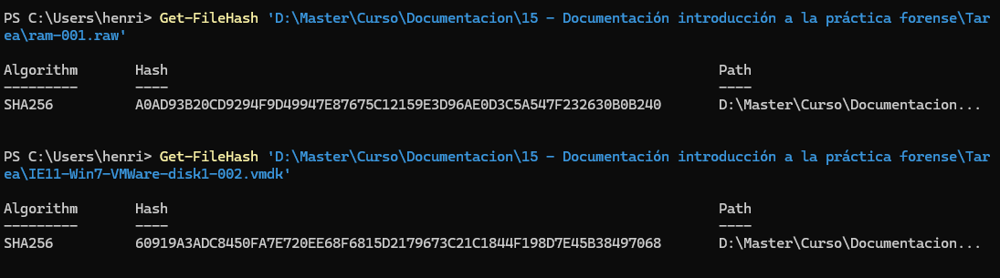
ram-001.raw y de la imagen de disco IE11-Win7-VMWare-disk1-002.vmdk, utilizado como punto de partida de la cadena de custodia.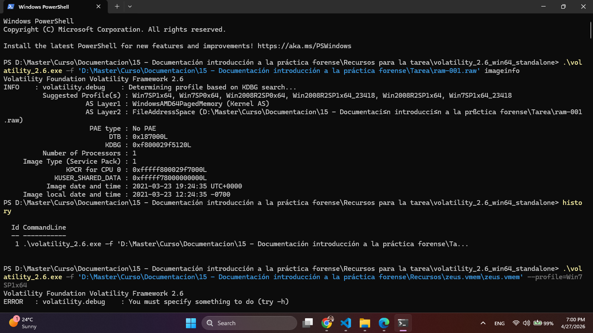
Volatility imageinfo, donde se identifica el perfil Win7SP1x64 y la hora de referencia de la imagen de memoria.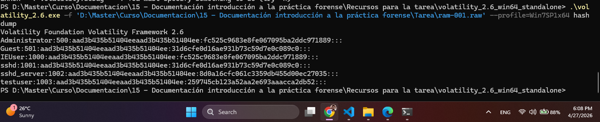
Volatility hashdump con los hashes locales recuperados, incluyendo IEUser y Administrator.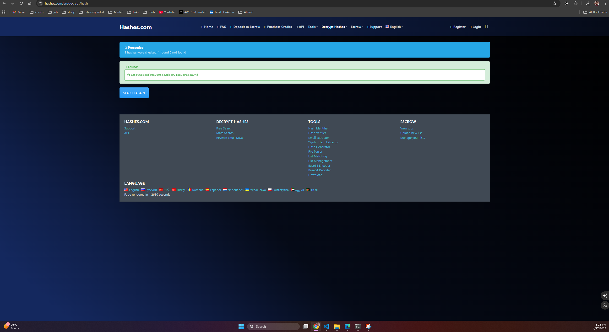
fc525c9683e8fe067095ba2ddc971889 a la contraseña Passw0rd!.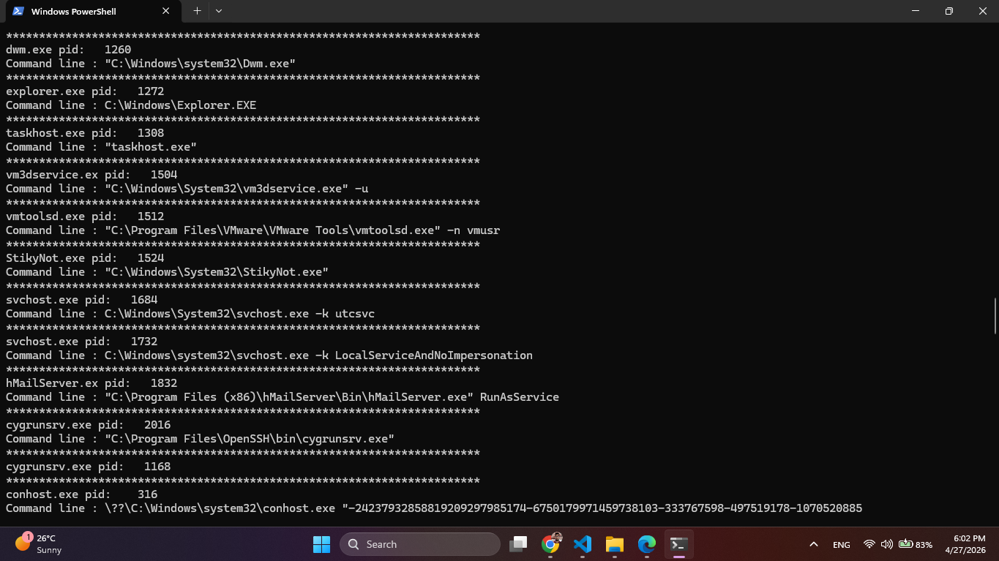
cmdline donde aparecen key.exe, hMailServer.exe, sshd.exe y otros procesos de interés durante la captura de memoria.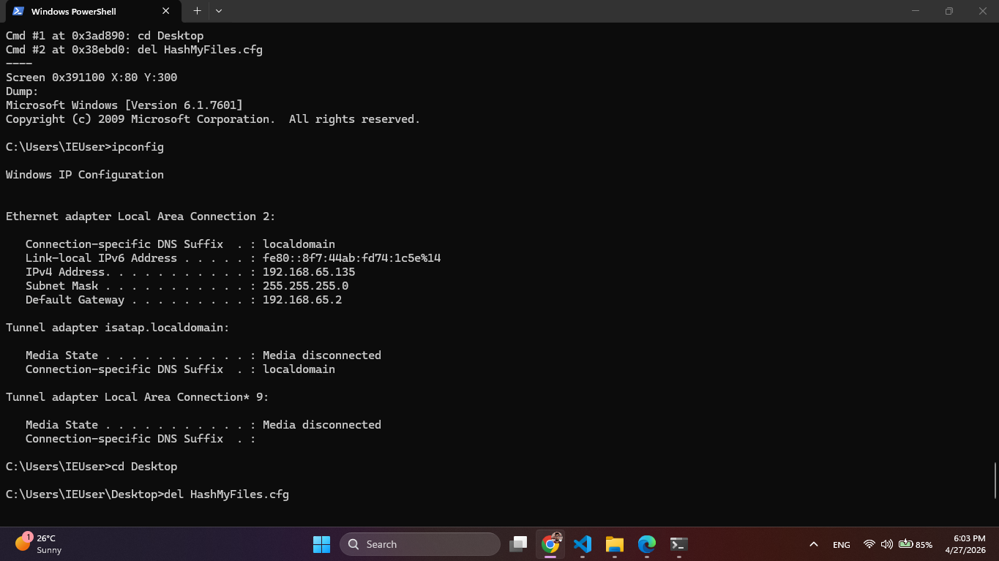
Volatility consoles mostrando la secuencia ipconfig, cd Desktop y del HashMyFiles.cfg.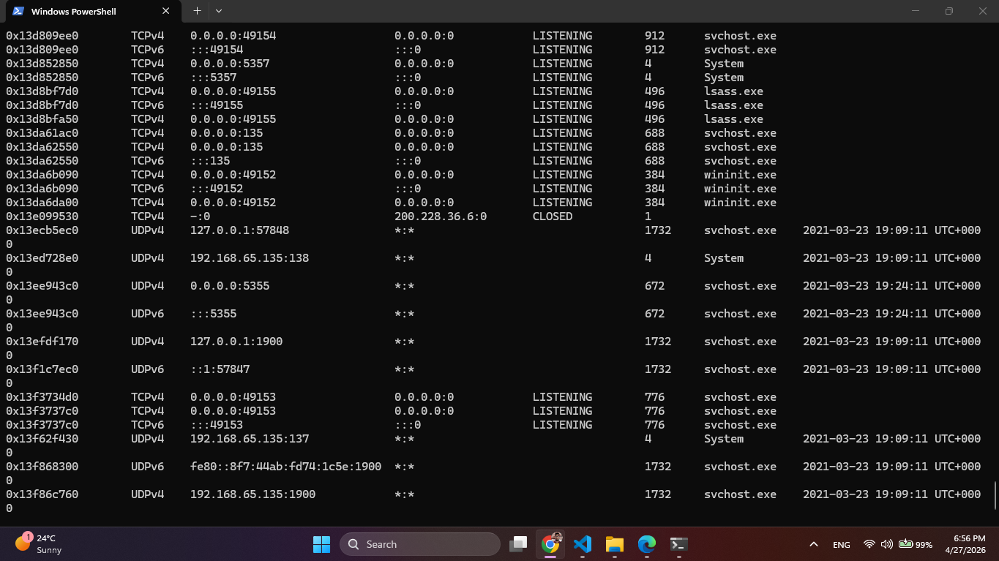
Volatility netscan con presencia de sshd.exe, hMailServer.exe y conexión cerrada a 200.228.36.6.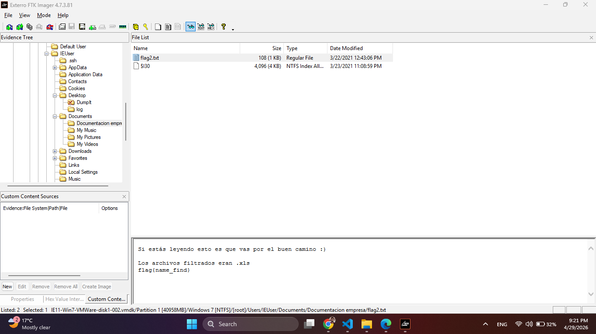
C:\Users\IEUser\Documents\Documentacion empresa, donde aparece flag2.txt en la misma ruta de los documentos sensibles.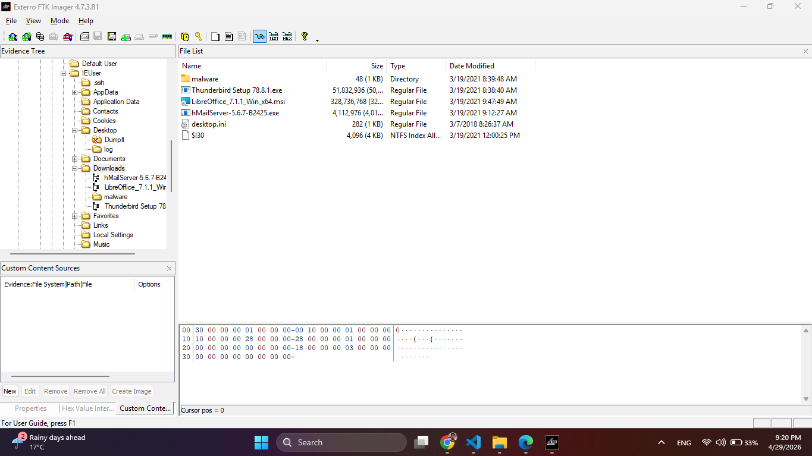
Downloads, con instaladores y elementos compatibles con la preparación del entorno.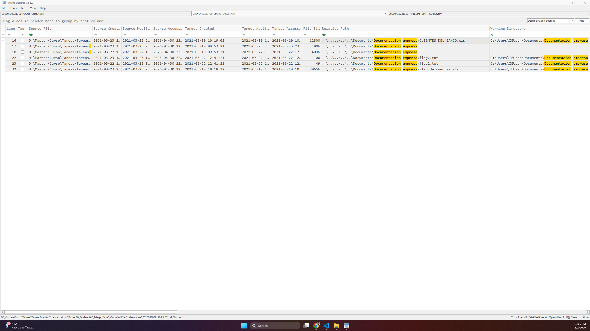
LECmd en TimeLine Explorer con referencias a Plan_de_cuentas.xls y CLIENTES DEL BANCO.xls.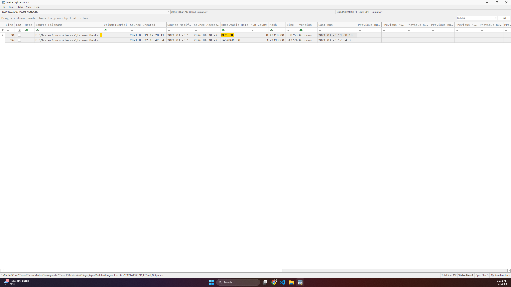
PECmd que documenta, entre otros, KEY.EXE, HASHMYFILES.EXE y HMAILSERVER.EXE.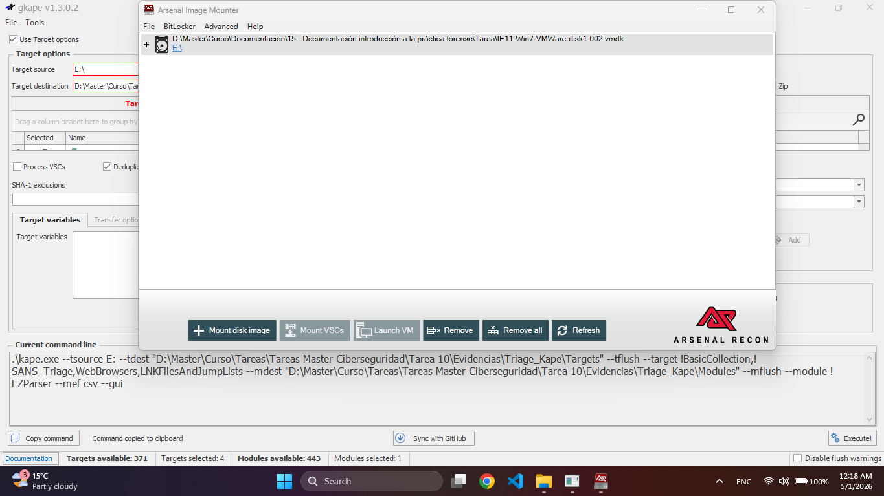
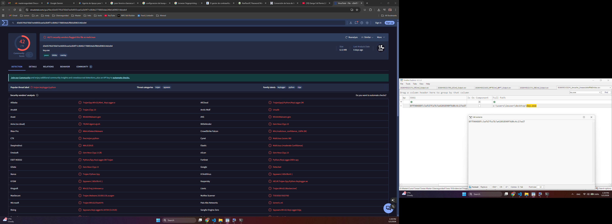
key.exe y de su clasificación en VirusTotal como artefacto malicioso.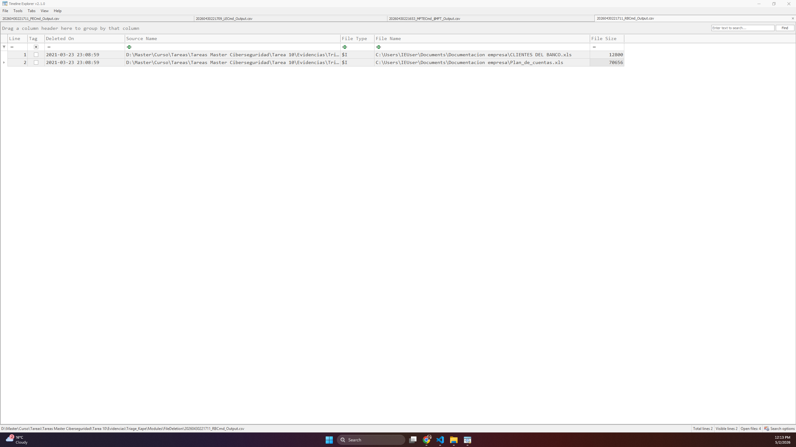
RBCmd que documenta la eliminación de CLIENTES DEL BANCO.xls y Plan_de_cuentas.xls a las 23:08:59 UTC.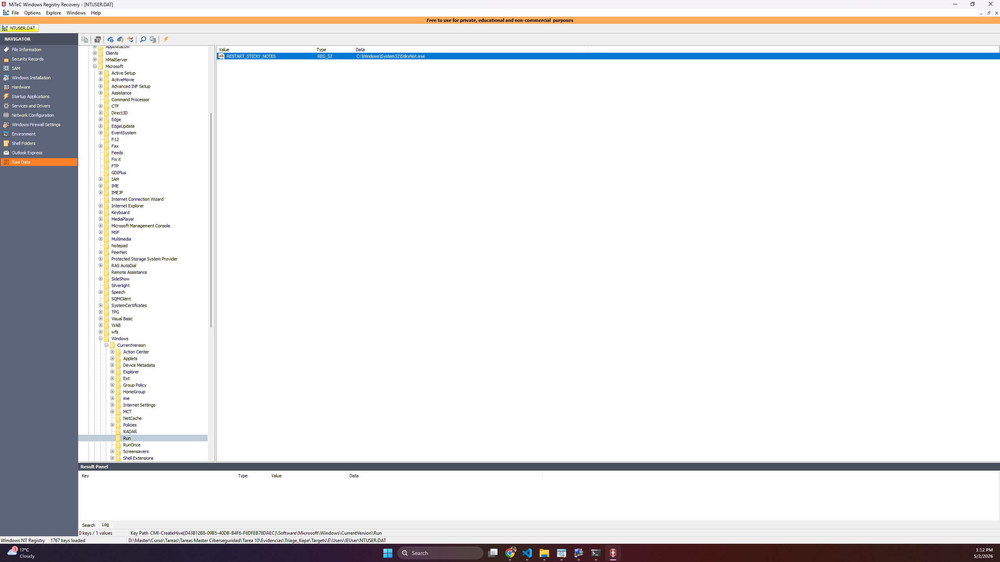
NTUSER.DAT con Windows Registry Recovery, sin evidencia concluyente de persistencia simple en claves Run del usuario.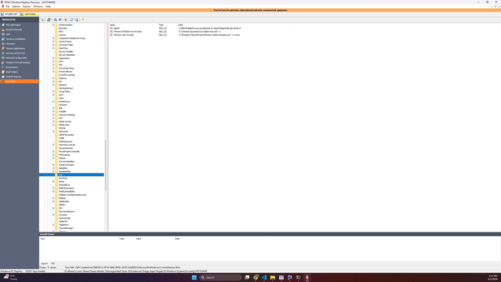
SOFTWARE, utilizada para descartar persistencia evidente mediante claves Run a nivel de sistema.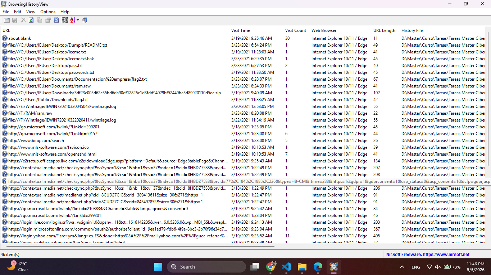
BrowsingHistoryView sobre WebCacheV01.dat, con historial mixto de URLs externas y referencias locales del perfil IEUser.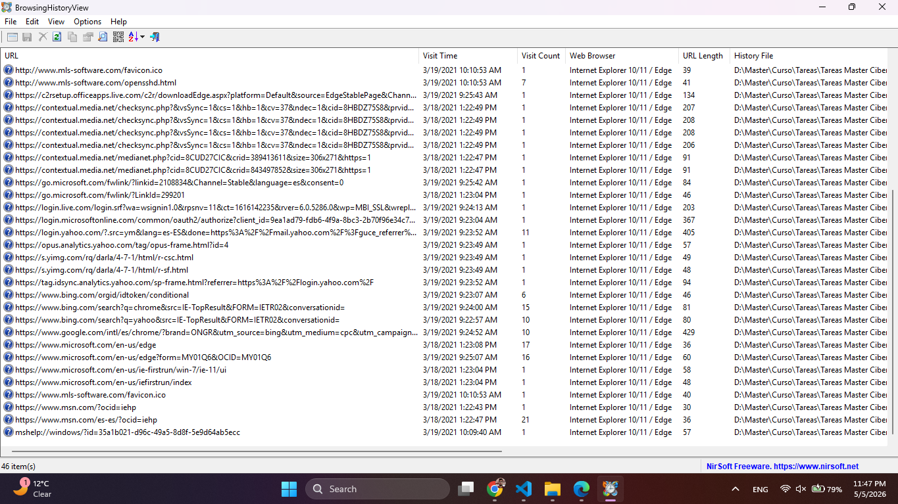
http://www.mls-software.com/opensshd.html, coherente con la preparación previa del componente OpenSSH observado en otros artefactos.